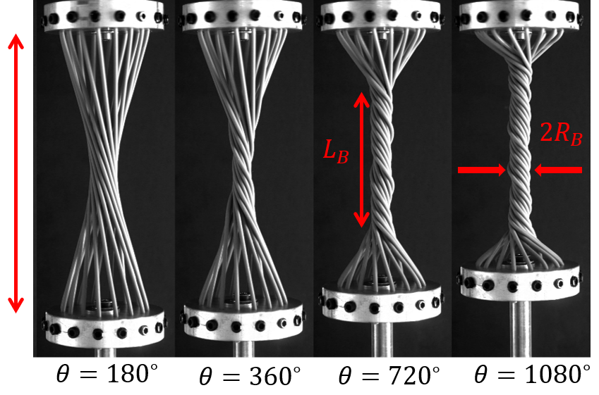
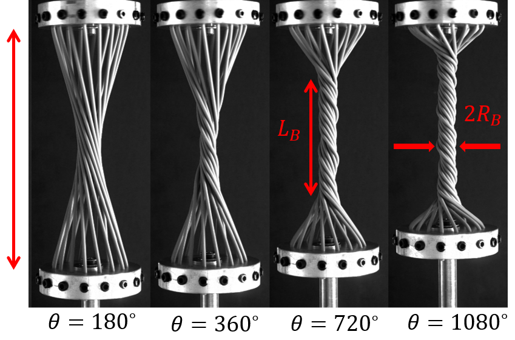

Welcome!
Welcome to Physics Hunter, a site documenting my journey as an early-career physicist. Here I share my research on crumpling thin sheets, filament twist, and soft matter physics.
You’ll find updates on my latest research, publications, outreach activities, and personal insights. Feel free to explore and connect!
 
